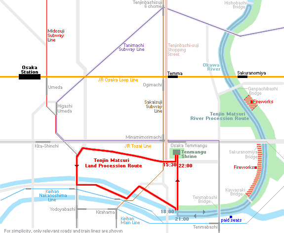
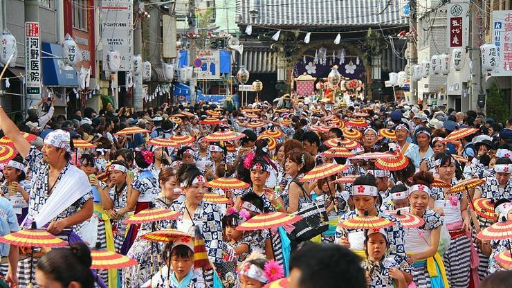
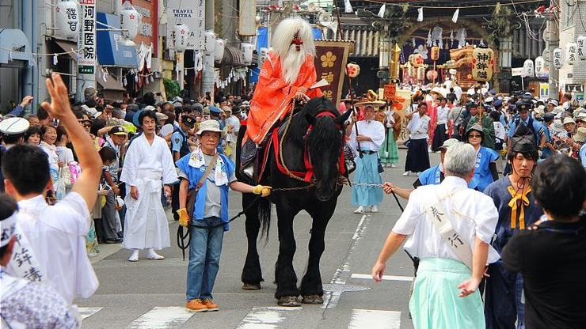
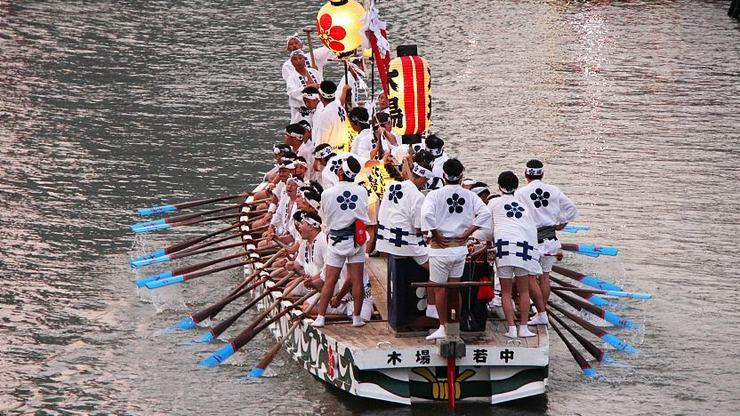
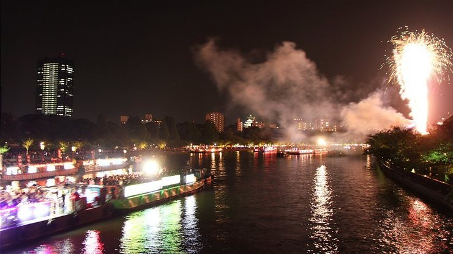

Tenjin Festival
天神祭
The Tenjin Festival (天神祭, Tenjin Matsuri) of Osaka is ranked as one of Japan's top three festivals, along with the Gion Matsuri of Kyoto and the Kanda Matsuri of Tokyo. The festival started in the 10th century and today takes place on July 24 and 25 every year. The main celebrations are held on the festival's second day, July 25, including a land procession and a river procession with fireworks.
Tenjin Matsuri is the festival of the Tenmangu Shrine and honors its principle deity Sugawara Michizane, the deity of scholarship. The festival begins by ceremonially inviting the deity out of the shrine and parading him through the city, carrying out various exuberant festivities to entertain him, before taking him back to the shrine. For the people, the lively festivities manifest in a wonderful occasion to enjoy the hot summer day, filled with traditional costumes, spectacular processions and a celebratory atmosphere.
On the morning of the first day (July 24), the festival kicks off with a ritual at Tenmangu Shrine, followed by prayers at the river for peace and the safety and prosperity of Osaka. In the afternoon, drums are sounded by men in tall red hats to inform everyone that preparations for the festival are complete.
The highlights of the festival start at 15:30 of the second day (July 25), when the red-hatted drummers lead the land procession from Tenmangu Shrine through the streets of Osaka. The long procession features costumed characters, including Sarutahiko, a long-nosed goblin riding a horse, a ceremonial float accompanied by festival music, lion dancers and umbrella dancers.
About an hour into the procession, the convoy carrying the mikoshi, the ornate, gilded portable shrine that temporarily holds the spirit of Tenmangu Shrine's deity, Sugawara Michizane, leaves the shrine, preceded by a boy and a girl leading a sacred ox, Michizane's messenger. Two more portable shrines join in the parade later, but look out for the one with a gilded phoenix at its top: this is the one that carries the deified spirit of Michizane.
After the procession arrives at Okawa River around 18:00, its members and portable shrines are loaded onto boats to be paraded up and down the river. Besides the procession boats, there are some "stage boats" on which traditional noh and bunraku performances are put on for landside onlookers. Darting between all of these boats, you can also spot some Dondoko boats that are agilely propelled up and down the river by young rowers. Seemingly endless rows of festival food stalls along the river contribute to the joyful mood.
The river procession continues as celebrations go on into the night and culminates at about 19:30 when fireworks start to go off, continuing until about 21:00. Although not one of the most outstanding firework displays in Japan, the fireworks of the Tenjin Matsuri, combined with the illuminated boats and their reflections off the river, make for a truly unique spectacle. The mikoshi convoy disembarks at about 21:00 and makes its way back to the shrine at 22:00, marking the end of the year's festival.
Expect throngs of people attending the Tenjin Matsuri, especially in the evenings during the river procession and fireworks. The competition for good viewing spots along the river is fierce as the demand for picnic space greatly outweighs supply. Paid seating is available in multiple locations along the river for between 3,000 and 49,000 yen. Advance bookings are required and difficult to make for foreign tourists.
Bridges along Okawa River are closed to road traffic during the river procession and provide good vantage points, but visitors are supposed to keep moving to ensure the smooth flow of human traffic. Kawasaki Bridge gets closed even to pedestrians, partly because common people are not supposed to look down onto the shrine's deity.
